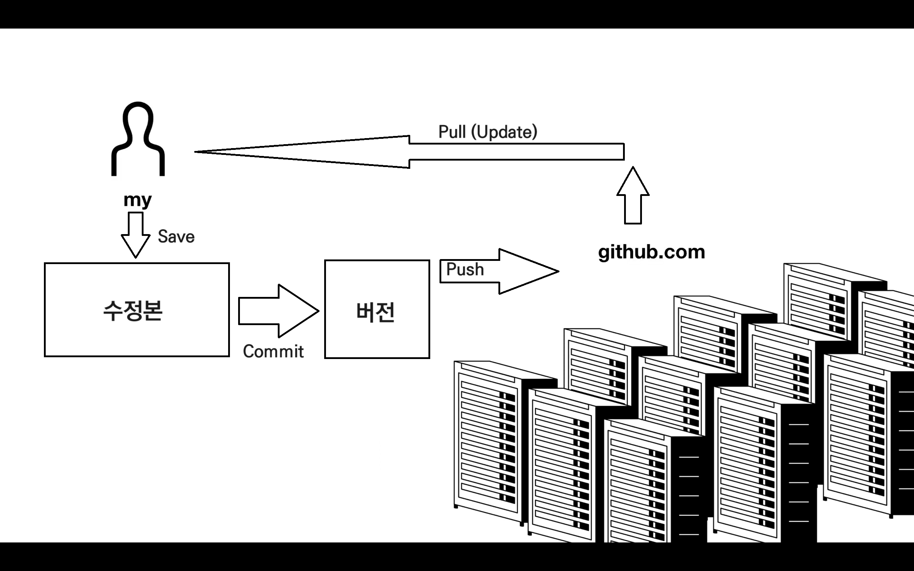

돌아가기
Git의 필수 명령어 5가지
생활코딩 강의 영상 (2배속 추천)
그 외에도 좋은 강의 찾으면 많음

1. Pull
Git에 저장되어있는 파일을 내 컴퓨터로 불러오는 기능. 영어의 "당기다" 라는 의미와 같음.
2. Add
내가 수정한 내용을 git에게 수정했다고 알려주는 기능.
이를 진행하지 않으면, Commit을 해도 수정사항이 새로운 버전에 저장이 되지 않음.
git add * : 현재 폴더의 모든 파일을 git에게 수정했다고 알려줌
3. Commit
수정된 내용을 저장하는 새로운 버전 생성.
4. Push
내 컴퓨터에만 저장되어있는 버전들을 서버로 업로드.
5. Branch
독립적으로 기능을 구현하고 싶을때 쓰는 기능

git branch 브랜치이름 : '브랜치이름' 이라는 Branch를 생성함.
git checkout 브랜치이름 : '브랜치이름' 이라는 Branch로 이동.